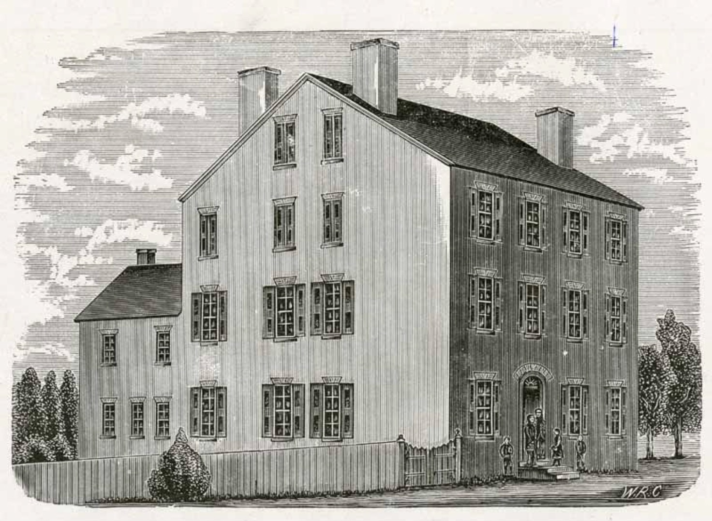

Early Influences and the Birth of the American Sign Language
 The origins of ASL can be traced back to the early 19th century. In 1817, the American School for the Deaf (ASD) was established in Hartford, Connecticut, by Thomas Hopkins Gallaudet and Laurent Clerc, a Deaf educator from France. This institution became the first permanent school for Deaf students in the United States. The language that emerged at ASD was a fusion of various sign systems:
French Sign Language (LSF): Clerc introduced LSF to the students, which significantly influenced the developing language.
Martha's Vineyard Sign Language (MVSL): Many students hailed from Martha's Vineyard, an island with a high population of Deaf individuals who used MVSL. Their native signing enriched the linguistic tapestry of the school.
Home Sign Systems: Deaf students brought unique signs from their communities, contributing to the evolving language.
This confluence of sign languages and systems led to the creation of a distinct language—ASL. The school's environment facilitated the natural development and standardization of ASL among the Deaf community.
The Role of Martha's Vineyard

Martha's Vineyard played a pivotal role in the history of ASL. From the late 17th to early 20th centuries, the island had an unusually high incidence of hereditary deafness. Both Deaf and hearing residents commonly used MVSL, creating a community where Deafness was not seen as a disability. When those Deaf individuals attended ASD, they introduced MVSL into the school's signing environment, influencing the development of ASL.
Recognition as a Language
For many years, ASL was mistakenly viewed as a mere collection of gestures or a simplified version of English. This misconception began to change in the 1960s, largely due to the pioneering work of linguist William Stokoe. Stokoe's research demonstrated that ASL possesses its own syntax and grammatical structures, establishing it as a legitimate, natural language. His work was instrumental in shifting perceptions and promoting the acceptance of ASL within both academic circles and the broader public.
Contemporary Status
Today, ASL is the primary language of many Deaf individuals in the United States and parts of Canada. It is also used in various countries around the world. Estimates of ASL users in the U.S. range from 250,000 to 500,000, including Deaf and hearing individuals. ASL is recognized for its rich literature and cultural significance, encompassing storytelling, poetry, and performance arts that reflect the experiences and values of the Deaf community.
The evolution of ASL underscores the importance of community, education, and recognition in the development and preservation of language. It stands as a vibrant testament to the Deaf community's identity and resilience.